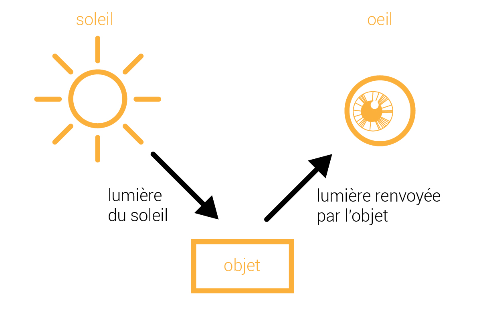
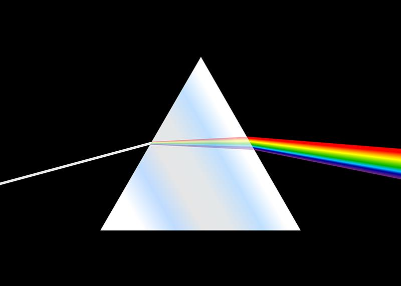
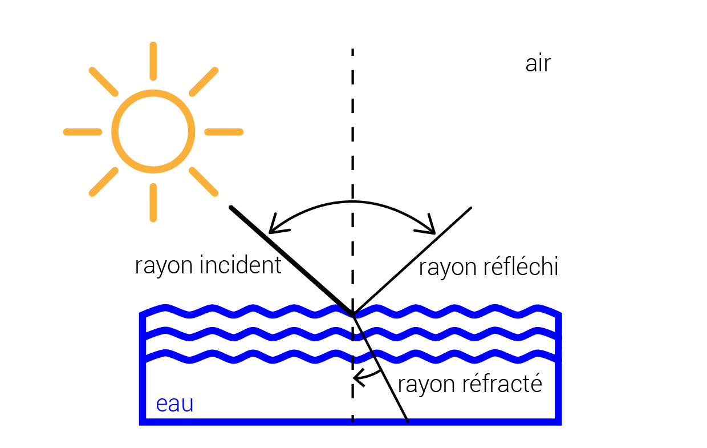
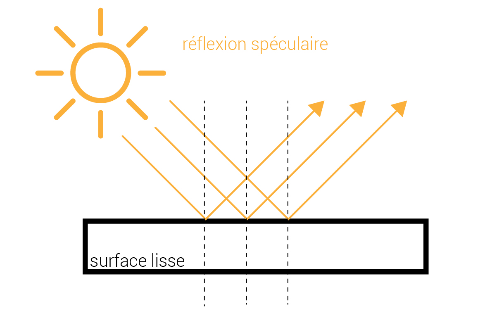
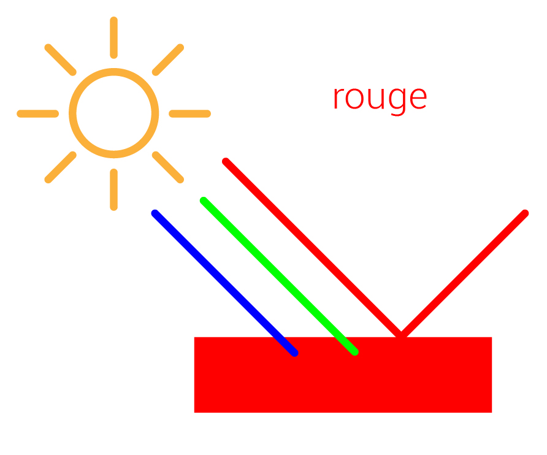
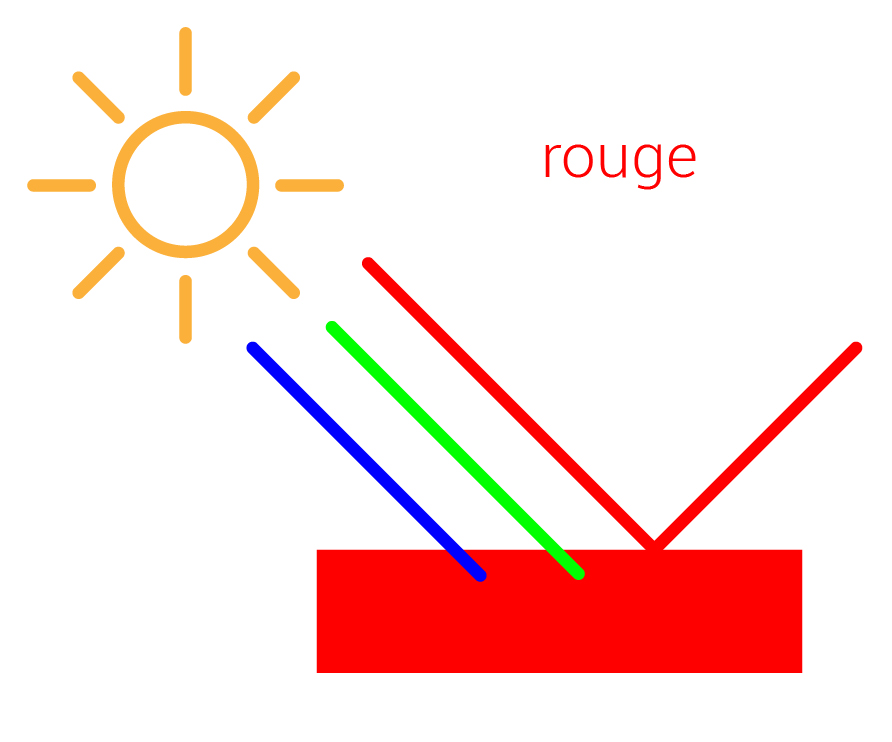

Why can we see objects?
In Ancient Greece, we used to say that the light came from the eyes to identify objects as seen in cartoons.
This statement is false. Indeed, we can see objects because they reflect a portion of the light that is received. We can not see an object that receive no light as it will be unable to reflect a light to our eyes. This is the case of an object in the dark.
We can see some objects because they emit light. This is the case of the sun, stars, lights, candles and flames: it's what we call primary sources of lights.

In 1666, during his optical experiments, Newton passes the white sunlight through a prism. He notices that output of the prism, that white light, is divided into several different color lights.These are the rainbow colors


|
Newton understands with this experience that the white light is separated into its components because each color beam is deflected differently by the glass of the prism. Thus, he notices for example that the red light is always less deviated than purple one.
Newton therefore understands that when white light passes from one transparent medium (such as air) to another (such as glass), its components are deflected a first time by color and when they emerge in air, they are again deflected, creating a luminous rays spread from red to violet, like the colors of the rainbow sky.
When the sun illuminates a thin mist (e.g. near water falls) or the charged atmosphere of thin droplets, you can see a rainbow. In reality, the droplets act as mini-prisms. White light enters inside the round droplet, reflects and springs. It is "decomposed."
When incident light enters into the interface between two environment such as air and water, we see two things:

Moreover, there are two types of reflection:
 The rays are reflected in a direction related to the angle at which they hit the object, much like a billiard ball hitting on a bar.
 The second type is diffuse reflection. When the surfaces are rough with asperities, the reflection is diffuse. The radiation is reflected in all directions
because of the heterogeneity of the environment, usually with a preferred direction in which the reflection is more important.
The second type is diffuse reflection. When the surfaces are rough with asperities, the reflection is diffuse. The radiation is reflected in all directions
because of the heterogeneity of the environment, usually with a preferred direction in which the reflection is more important.
|
|

By illuminating a white surface, almost all of the light rays of white light is reflected.

By illuminating a black surface, there is substantially no reflected light because the surface will absorb the radiation.The absence of light at the observer's eye level is translated by the brain as a black color.

By illuminating a blue surface (or other), the material absorbs the other colors and transformes them into heat. Only scattered blue light can reach the observer's eye. This object seems blue.

 
